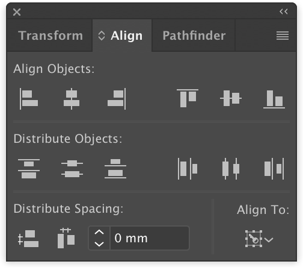
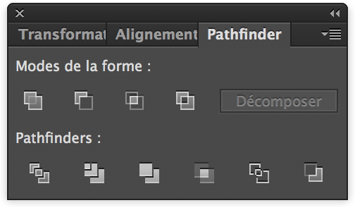

1.2 Square, Advanced Alignment and Pathfinder
Now add a square of width 7mm and height 50mm (color is not important)
Align the square with the "Align" tools at the edge to the right of the black circle.
To perform this action without changing the position of the circles, the additional alignment options must be displayed.
To do this, click on the button at the top right of the alignment tool window 
Choose "Show Options". An additional row of icons is displayed:

Select by holding the left mouse button, only the black circle and the rectangle. Then choose at the bottom right of the Align Panel "Align To:" and click on "Align to Key Object". Highlight the black circle and press the buttons : "Horizontal Align Left" then "Vertical Align Center" in the "Align Objects" cathegory.
We will now use the Pathfinder to subtract the square from the white circle.
The Pathfinder is similar to the "Group" function in Tinkercad as it allows you to perform boolean operator actions.
The Pathfinder is by default right next to "Align" in the Panel.
(If not, display the Pathfinder panel by selecting from the menu bar at the top of the screen, "Window" then "Pathfinder" drop-down menu)

Highlights the circle and rectangle by executing a (⇧ SHIFT + click) and then in the Pathfinder window use the function "Subtraction"
The white circle now has an indentation on the left.
Select the "Polygon Tool" under the "Rectangle icon" and create a 6 side polygon
In the "Transform" panel, rotate the polygon by 90° then change the W Value to 10mm and the H value to 20mm
Now align it to the left center of the white semicircle by using "Align to key object", selecting the white semicircle then click on "Vertical Align Center" and in the bottom box enter "-3mm" and finally click on "Horizontal Distribute Space"
Make sure the semi-white circle and the polygon are highlighted and use the pathfinder to subtract them together.
The white semicircle now has a notch on the left.